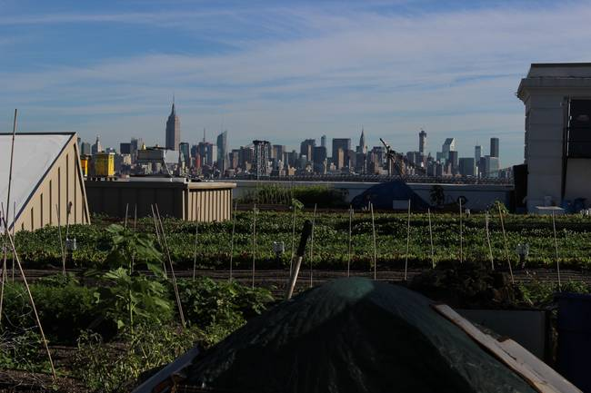
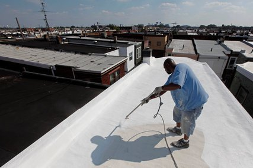
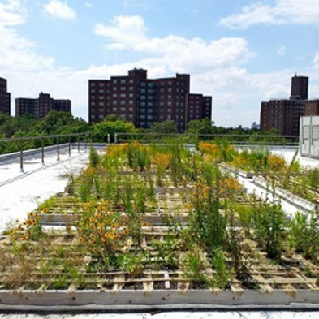
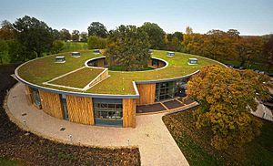
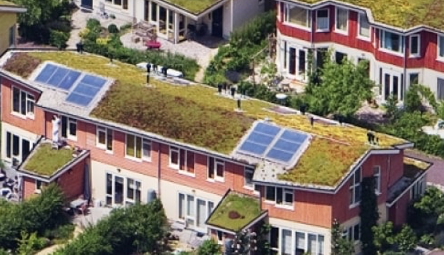
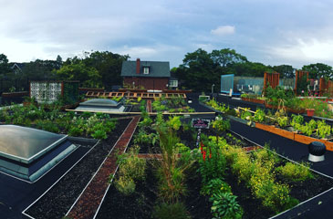

 New York City’s sewage systems are old and can’t handle large amounts of snowmelt or stormwater. When large quantities of water flow into the combined sewer overflow systems, which make up 60 to 70 percent of the city’s sewers, they tend to spill over into New York City’s rivers.
It’s spring — time to plant your roof. Roofs, like coffee, used to be black tar. Now both have gone gourmet: for roofs, the choices are white, green, blue and solar-panel black.
City rooftops covered with vegetation are seen as a way to reduce the urban heat-island effect and cut energy usage--but so far, the results have been unimpressive
TOM KAMINSKI, a traffic reporter for WCBS News Radio 88, spends most afternoons perched in a helicopter looking for the unusual. What caught his eye one day as he gazed through his plastic bubble 1,500 feet above street level was a patch of green.
 A green roof has many benefits at economic, ecological and societal levels. A green roof provides a rainwater buffer, purifies the air, reduces the ambient temperature, regulates the indoor temperature, saves energy and encourages biodiversity in the city. Green roofs are part of climate-proof construction. What's more, people are happier in a green environment than in grey surroundings. Below we explain the benefits one by one.

A green roof system is an extension of the existing roof which involves, at a minimum, high quality water-proofing, root repellent system, drainage system, filter cloth, a lightweight growing medium, and plants.